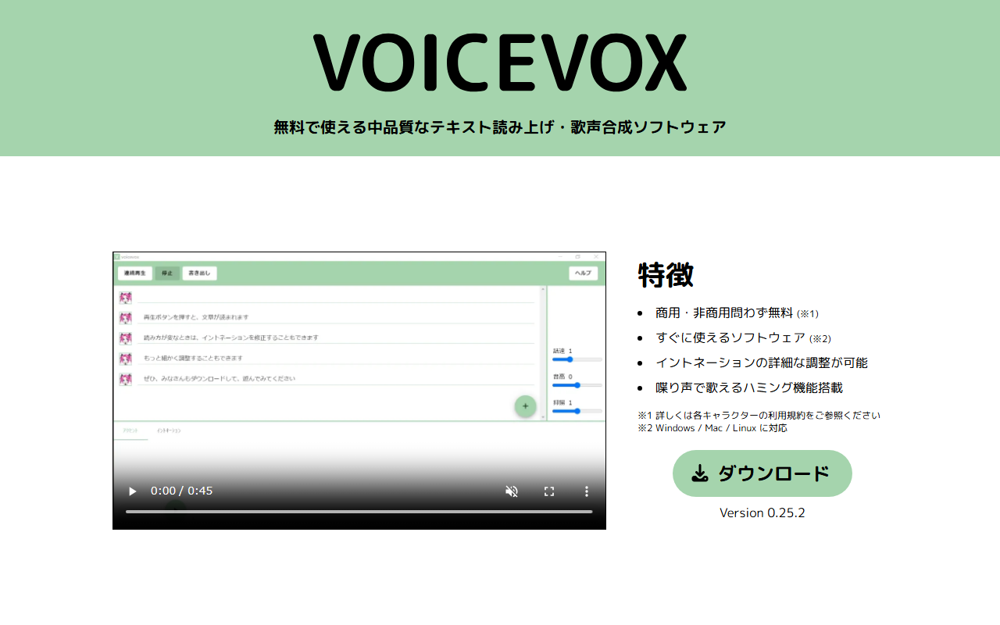
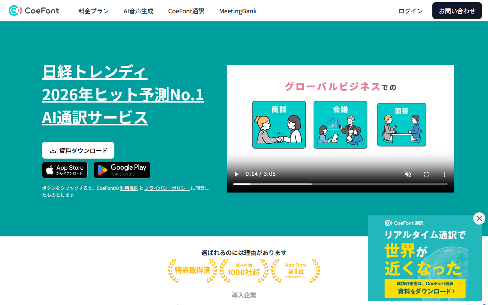

ElevenLabsは日本語で使える？音声の自然さとVOICEVOX・CoeFontとの違い
ElevenLabs（イレブンラボ）は、動画や研修の原稿から日本語ナレーションを作れるAI音声サービスです。音声クローンや文字起こしにも対応。
日本語音声の自然さや画面表示に加え、無料枠と商用利用の条件、VOICEVOX・CoeFontとの違いを紹介します。
ElevenLabsの日本語対応状況（音声・画面・無料枠・商用利用）
- 音声生成：Eleven v3は日本語対応
- 公式サイト：日本語ページあり
- 生成画面：日本語切り替えの案内なし
- 無料枠：月10,000クレジット
- 商用利用：Starter（月$6）から
迷ったらElevenLabsがおすすめです。無料枠で1万字まで試せ、商用利用と音声クローンはStarterから使えます。
日本語の公式サイトから無料登録を始め、料金ページも開けます。
ElevenLabsの日本語対応の範囲（音声生成・音声クローン・文字起こし）

公式サイトのトップページは日本語表示です。「新規登録」と「料金」へのリンクがあります。
日本語での利用はテキスト読み上げが中心で、音声クローンは有料プランから使えます。
音声生成（テキスト読み上げ）と音声クローンの日本語対応
日本語に対応するテキスト読み上げモデルは3つ。ブラウザとスマホアプリのどちらからでも使えます。
録音から声を再現する音声クローンは2種類です。
- Instant Voice Cloning：1〜2分の録音で作成。Starter以上
- Professional Voice Cloning：最低30分（推奨2〜3時間）の録音が必要。Creator以上。日本語を含む39言語に対応
文字起こし（Speech to Text）・ダビングの日本語対応
録音を文字にするSpeech to Text（Scribe v2）の対応言語は90以上。公式の精度区分では、日本語が高精度のグループです。動画を別の言語に吹き替えるダビング（Dubbing v2）も、日本語に対応しています。
日本語音声の自然さはモデルで変わる
日本語のナレーションなら、まずEleven v3で試すのが順当です。
モデルによる違い（Eleven v3・Multilingual v2・Flash v2.5）
Eleven v3の対応言語は70以上。Multilingual v2は29、Flash v2.5は32に対応します。表現力を重視したv3は、2026年2月に正式リリースされました。
ある技術ブログでは、日本語はv3のほうが安定すると評価しています。Flash v2.5については、速度を優先するぶん抑揚が粗くなる傾向を挙げています。
公式サンプル・デモで確認できること
ElevenLabs公式の日本語読み上げページには、よく使われている音声が並んでいます。無料プランで試す声を絞り込む手がかりになります。
公開レビューの評価は分かれます。noteの解説記事では、v3になって読み上げが格段に良くなったとの評価です。一方、個人ブログの使用レビューには、日本語のイントネーションに違和感が残るとの指摘。モデルや利用時期の違いも、評価に影響します。
自然に聞こえるか、違和感が残るかは、原稿を読ませてみないと分かりません。無料プランでは、声の好みを比べる前に、次の箇所を聞いてみてください。
- 文脈で読みが変わる漢字（「今日」「一日」「行った」など）の読み分け
- 日付・金額・割合など数字の読み方
- 英字の略語や、社名・商品名の読み
- 長い一文での息継ぎの位置と、文末の上がり下がり
日本語の音声サンプルを再生し、声の候補を絞れます。
料金プランと商用利用の条件、日本語のクレジット消費
ログイン後の画面（ダッシュボード）で作る場合、日本語の原稿はどのモデルでも1文字＝1クレジットです。v3を選んでも、読ませられる量は変わりません。
Free〜Enterpriseのプランとクレジット数
料金はUSD建ての税抜表示です。1ドル=157円換算（執筆時点の目安。為替で変動）では、Starterの月$6が約942円、Creatorの月$22が約3,454円。個人のナレーションなら、次の3つが候補になります。
- Free：$0、月10,000クレジット（約1万字）、商用ライセンスなし
- Starter：月$6（年払いなら月$5相当）、月30,000クレジット（約3万字）、商用ライセンス付き
- Creator：月$22（新規契約は初月$11）、月121,000クレジット（約12万字）、商用ライセンス付き
上位にはPro（月$99）、チーム向けのScaleとBusiness、個別見積もりのEnterpriseがあります。
各プランの月間クレジットと年払い時の月額換算が並んでいます。
月に読む原稿量に合うプランの選び方は、別のnoteで詳しく紹介します。
商用利用の条件と日本語入力のクレジット消費
収益化しているYouTube動画や、仕事で納品するナレーションには、商用ライセンスが必要です。
料金ページには、プランごとの「含まれる分数」も載っています。
- Free：約10分
- Starter：約30分
- Creator：約121分
音声1分を約1,000文字として数えた目安です。日本語の原稿は1文字＝1クレジットなので、必要量を原稿の字数から見積もれます。モデルで料金が変わるのは、APIで従量課金する場合だけ。1,000文字あたりv3とMultilingual v2が$0.10、FlashとTurboが$0.05です。
画面・支払い・サポートは日本語でどこまで使えるか
契約前の情報は日本語で集められ、解約や請求書の取り出しも画面で完結します。会社で導入する場合は、カード払いと請求書の扱いが社内の経理基準に合うかを見ておきましょう。
公式サイトは日本語、生成画面（ダッシュボード）の表示は？
公式サイトと料金ページは日本語で読めます。ヘルプも一部が日本語に対応。公式ヘルプには、音声作成画面（ダッシュボード）を日本語表示へ切り替える案内が見当たりません。英語で表示される場合は、ブラウザの翻訳機能を使えます。
支払い方法・請求書・インボイスの扱い
画面から申し込むプランでは、次の支払い方法を使えます。
- クレジットカード
- Apple Pay
- Google Pay
請求書払い（銀行振込）の案内も、利用できるカードブランドの一覧も見当たりません。JCBが通らない場合に備え、VisaかMastercardも用意しておくと手戻りを減らせます。プリペイドカードは公式に非推奨。
ヘルプでは、支払った分の請求書と領収書の入手方法を案内しています。画面のSubscription→Billing→View invoicesからPDFで取り出せます。登録メールアドレスにも届く仕組み。ただし、日本の適格請求書発行事業者の登録番号が載るという記載は見当たりません。利用料を経費にする際の消費税の扱いは、税理士に相談してください。
日本語サポート窓口の実態
ElevenLabsは2025年4月、東京に日本法人ElevenLabs Japan G.K.を設立。公式ブログでは、日本語音声のローカライズを強化するとしています。ただし、ヘルプセンターには、日本語で問い合わせに対応するとの記載がありません。
日本語版トップから製品一覧と料金ページへ進めます。
返金の条件は、支払いから14日以内かつクレジット未使用。音声を1本でも作ると対象外になります。無料プランで読み方を確かめ、有料プランは月払いで始めれば、合わない場合も負担は1カ月分です。
日本語対応の代替ツールとの違い（VOICEVOX・CoeFont）
VOICEVOXはソフト自体が無料。ElevenLabsとCoeFontには無料枠があり、試したあとで有料プランへ移れます。自分や講師の声を再現するなら、Starter以上のInstant Voice Cloningが候補です。
VOICEVOXとの違い

公式ページには「無料で使える」とあります。対応OSはWindows・Mac・Linuxです。
VOICEVOXは、オープンソースをもとにした無料のテキスト読み上げ・歌声合成ソフト。ダウンロード型なので、ブラウザやスマホアプリで使うElevenLabsとは作業環境が異なります。利用をやめるときは、アンインストールするだけです。
商用利用も無料。ただし、「VOICEVOX:ずんだもん」のようなクレジット表記が欠かせず、声（キャラクター）ごとの利用規約にも従います。ずんだもんなどの共通規約では、表記なしで商用利用する場合、1キャラクターにつき40万円（税別）の個別契約が必要です。VOICEVOXを選ぶ基準は、クレジット表記を入れられるかどうか。
ダウンロード先に加え、ソフトと各キャラクターの利用規約を確認できます。
配布元のサイトも利用規約も日本語です。使い方について質問する場合は、開発元が公開しているGitHubのissueに書き込みます。
CoeFontとの違い

公式サイトは日本語で、上部メニューから「AI音声生成」と「料金プラン」に進めます。
CoeFontの無料プランは、月800文字までの非商用利用に限られます。「Voiced by coefont.cloud」のクレジット表記も必要です。商用で使えるのは、月$20（税込）・月80,000文字のStandardから。上位のPlusは月$350（税込）で、月1,000,000文字を最大5ユーザーで使えます。
無料枠はElevenLabsのほうが多く、月10,000クレジット（日本語で1万字）です。CoeFontは月800文字。価格の近いプランで比べると、ElevenLabsのCreator（月$22）は121,000クレジットです。CoeFontのStandard（月$20）は80,000文字。
商用で使える最安プランを1年分で比べると、ElevenLabsのStarterは年払いで$60（税抜）です。CoeFontのStandardは12カ月分で$240（税込）。ただし、Starterの月30,000クレジット（日本語で3万字）は、Standardの80,000文字を下回ります。毎月3万字を超えるなら、Standardと比べる相手はStarterではなくCreatorです。
StandardとPlusはカード払いのみで、年間契約はなし。銀行振込が使えるのは、年間契約に限られるEnterpriseだけです。領収書やインボイスの登録番号は、CoeFontのよくある質問ページと利用規約に記載が見当たりません。
料金プランを確認し、AI音声生成の画面へ進めます。
解約するには、アカウント設定からFreeプランへ戻します。ダウングレードの理由を入力すると、翌月以降の課金が止まります。
Murf AIとの違い

説明文は日本語ですが、Studioを開くボタンなど一部は英語表示です。
Murf AIの無料トライアルでは、33言語・300以上の音声を試せます。音声生成と文字起こしは各10分まで。音声のダウンロードはできません。有料のCreatorは月$29、年払いなら月$19相当です。
日本語音声の例と、無料で使える音声生成画面を見られます。
よくある質問
- 無料プランには、クレジットの量のほかにどんな制限がありますか？
使い残したクレジットは翌月に繰り越せません。長い原稿をまとめて音声にするStudioは3プロジェクトまでで、Starterに上げると20プロジェクトまで使えます。
- 社員や講師の声で音声クローンを作ってもよいですか？
Instant Voice Cloning（Starter以上）では、声を複製する権利と本人の同意が必要です。作成時に、どちらも得ていることをチェックボックスで確認します。Professional Voice Cloning（Creator以上）に登録できるのは自分の声だけ。本人の同意があっても、他人の声は登録できません。社員や講師の声を使う場合は、本人が自分のアカウントで作り、共有リンクを発行します。受け取った側は、そのリンク経由で声を利用。退職や契約終了のあとでもめないよう、何に使うかと利用期間は書面で取り決めておくのが無難です。
- 支払いは日本円でできますか？
ブラウザから申し込んだ場合、請求はUSD建てです。円での引き落とし額は、カード会社の換算レート次第。年払いにすると請求が年1回にまとまり、為替換算もそのときだけです。
- 解約したらすぐに料金は止まりますか？
設定画面から解約すると、次回以降の請求が止まります。支払い済みの期間が終わるとFreeプランへ移り、残ったクレジットは失効。スマホアプリで契約した場合、解約と返金申請の窓口はAppleまたはGoogleの購読管理です。
画面ごとの手順は、解約と返金を扱うnoteで説明します。
まとめ｜ElevenLabsを選ぶ基準
VOICEVOX・CoeFontとの選び分けは、次の条件で決められます。
- 費用をかけず、動画や音声にクレジットを表記できるならVOICEVOX（声ごとの利用規約に従う）
- 無料で多めに試したい、英語など他の言語も作る、月額を抑えたいならElevenLabs（無料枠は月10,000クレジット、有料は月$6から）
- ElevenLabsの読みが原稿に合わないときは、同じ原稿をCoeFontの無料枠（月800文字）で試し、合えばStandard（月$20・税込）で商用に使う
無料登録の入口と料金ページを日本語で見られます。有料プランに進む前に、無料枠で原稿を1本読み上げると、必要なクレジットの見当がつきます。